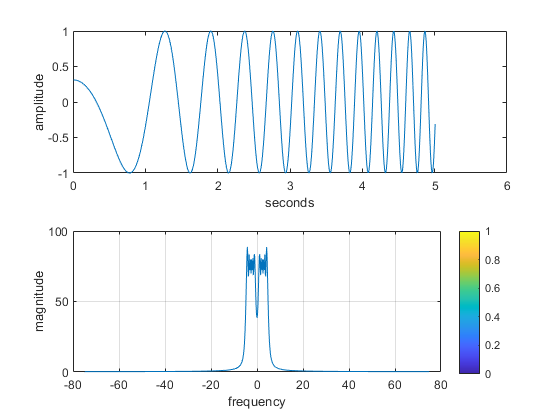
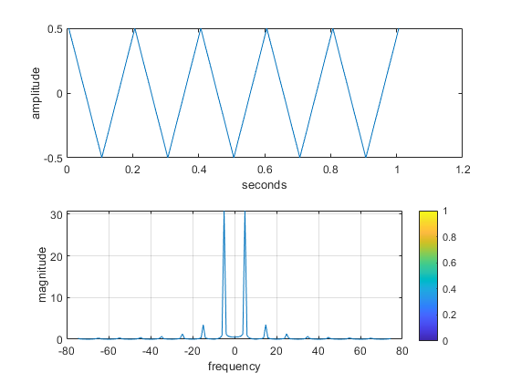
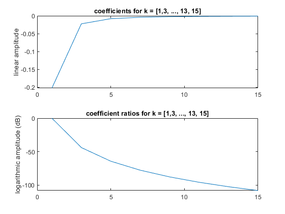
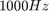
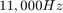
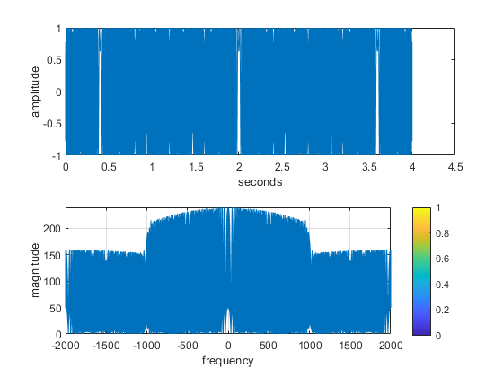
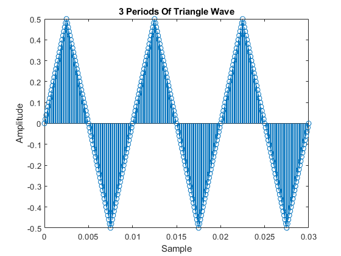
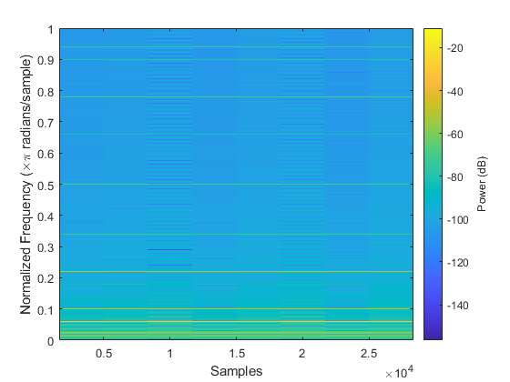
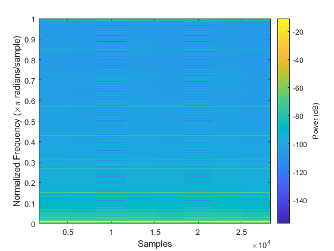
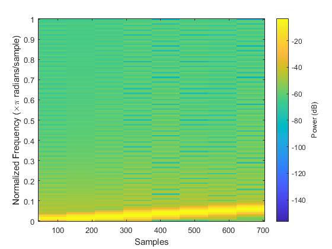

Contents
Sampling & Aliasing: Lab S-8 - Lab 2 Exercises
clear;
clc;
clf;
close all;
Pre-lab
Demonstrate Chirp Functionality
chirpPlot = figure("visible","on"); f = [0 5]; t = [0 5]; fs = 150; [t,x] = generateChirp(f,t,fs); plotspec( x, 1/fs), colorbar, grid on %-- with negative frequencies print("demo_chirp","-dpng",'-r600'); % only uncomment in case of desired file change % Demonstrate Triangle Wave Functionality trianglePlot = figure("visible","on"); f = 5; t = [0 1]; fs = 150; [t,x] = generateTriangle(f,t,fs); plotspec( x, 1/fs), colorbar, grid on %-- with negative frequencies % print("demo_triangle","-dpng",'-r600'); % only uncomment in case of desired file change % Fourier Series of a Triangle Wave ftTriangle = figure("visible","on"); k = (0:7)*2 + 1; % Get odds i = 1:length(k); disp("The coefficients for k = [1,3, ..., 13, 15] are as follows:") kcoeff = (-2./((pi^2).*(k.^2))); tiledlayout(2,1) nexttile plot(k,kcoeff) title("coefficients for k = [1,3, ..., 13, 15]") ylabel("linear amplitude") disp([i;kcoeff]) disp("The ratios $k(i):k_1$ are as follows:") rkcoeff = kcoeff./kcoeff(1); disp([i;rkcoeff]) nexttile plot(k,20*log(rkcoeff)) title("coefficient ratios for k = [1,3, ..., 13, 15]") ylabel("logarithmic amplitude (dB)") % print("ft_triangle","-dpng",'-r600'); % only uncomment in case of desired file change
The coefficients for k = [1,3, ..., 13, 15] are as follows:
Columns 1 through 7
1.0000 2.0000 3.0000 4.0000 5.0000 6.0000 7.0000
-0.2026 -0.0225 -0.0081 -0.0041 -0.0025 -0.0017 -0.0012
Column 8
8.0000
-0.0009
The ratios $k(i):k_1$ are as follows:
Columns 1 through 7
1.0000 2.0000 3.0000 4.0000 5.0000 6.0000 7.0000
1.0000 0.1111 0.0400 0.0204 0.0123 0.0083 0.0059
Column 8
8.0000
0.0044
   2.1.a
What happens when we make a signal that “chirps” up to a very high frequency, and the instantaneous frequency goes past half the sampling rate? Generate a chirp signal that starts at  when t=0s, and chirps up to , at t=4 s. Use f_s = 4000 Hz.
The needed parameters are f = [1000 11000]; t = [0 4]; fs = [4000];
The above parameters result in the following function call:
% Chirp Beyond Nyquist Rate
f = [1000 11000];
t = [0 4];
fs = [4000];
[t,x] = generateChirp(f,t,fs);
2.1.b
Generate the chirp signal in MATLAB and make a spectrogram with a short section length, LSECT, to verify that you have the correct starting and ending frequencies. For your chosen LSECT, determine the section duration TSECT in secs.
The following code is used to plot the chirp in both the time & frequency domain:
plotspec( x, 1/fs), colorbar, grid on %-- with negative frequencies
2.1.c
Explain why the instantaneous frequency seen in the spectrogram goes up and down between zero and \pm\frac{f_s}{2}, i.e., it does not chirp up to 11,000 Hz. There are two effects that should be accounted for in your explanation.
Folding Effect: frequencies where 0 Hz <= fsig Hz <= fs/2 Hz can be recorded with no loss of information. However, when fs/2 Hz <= fsig Hz <= fs Hz, the associated frequencies can be interpreted either as positive frequencies within the range fs/2 Hz <= fsig Hz <= fs Hz Hz, or as negative frequencies within the range 0 Hz <= -fsig Hz <= fs/2 Hz, or a reflection across the y-axis. However, because the signals are real, they already reflect and duplicate themselves over the y-axis (cost = (e^(jwt)+e^(-jwt))/2). As a result, we can only get any useful information on frequencies between 0 Hz <= fsig Hz <= fs/2 Hz.
Aliasing Effect: Because we have no anti-aliasing filter, the higher-frequency signals present in the signal become noise that confounds the frequency information gathered from the plotspec(...)function.
clear;
2.2.1.a
The matlab script to generate a triange wave can be found in triangle.m. The below code is what is found in the triangle.m script
function y = triangle(fs,amp,T,tstop) fs - Sample rate amp - Amplitude of wave T - Period of wave tstop - Duration of signal x = 0:(1/fs):tstop;
% Formula for a triangle wave y=((4*amp)/T)*(abs(mod(x-(.25*T),T)-0.5*T))-amp; end
The function allows us to tune the sample rate, amplitude, period (and frequency), and the duration of the signal that we want back.
2.2.1.b
The below code uses the function created in step 2.2.1.a to generate a triangle wave with a period of 10 msec, a sample rate of 10000Hz, and a duration of 3 seconds.
% Parameters to adjust the triangle wave fs = 10000; Amp = 0.5; tStop = 3; T = .01; % Generate a triangle wave y = triangle(fs,Amp,T,tStop); % The below code will plot 3 periods of the generated signal to verify that % we have the correct timing % Allocate the space for the data set to show only 3 periods of the wave yprime=zeros(1,(.03/(1/fs))); % Grab the samples that we want for i = 0:(.03/(1/fs)) yprime(i+1) = y(i+1); end figure("Name","triangle wave"); stem(0:1/fs:.03,yprime); xlabel("Sample"); ylabel("Amplitude"); title("3 Periods Of Triangle Wave"); % Save the plot for our md file and poster saveas(gcf,"3periodtriangle.jpg");
2.2.1.c
As verified with the professor, we used matlab's spectrogram function which is available from the signal processing toolbox to generate our spectrogram plot.
figure("Name","Triangle Wave Spectrogram"); title("Spectrogram 10 ms Triangle Wave") spectrogram(y,'power','yaxis'); saveas(gcf, "spectrogram_p_2_1_a.jpg");
2.2.1.d
We can see multiple harmonic lines. After creating the plot we manually zoomed in to check for lines. It should be noted that since we plotted in dB scale we can see additional harmonics that weren't necessarily expected by the lab. Below is a list of all the harmonics that were found.
.02 = 100 Hz .06 = 300 Hz .1 = 500 Hz .14 = 700 Hz .18 = 900 Hz .22 = 1100 Hz .26 = 1300 Hz .30 = 1500 Hz .34 = 1700 Hz .38 = 1900 Hz .42 = 2100 Hz .46 = 2300 Hz .50 = 2500 Hz .54 = 2700 Hz .58 = 2900 Hz .62 = 3100 Hz .66 = 3300 Hz .70 = 3500 Hz .74 = 3700 Hz .78 = 3900 Hz .82 = 4100 Hz .86 = 4300 Hz .90 = 4500 Hz .94 = 4700 Hz .98 = 4900 Hz
2.2.1.e
We calculate the normalized fundamental frquency. This way we can easily compare the strongest line in the spectrogram plot with the calculated normalized frequency.
norm_fundamental_freq = (((1/T)*2*pi)/fs)/pi;
disp("Normalized fundamental frequency:");
disp(norm_fundamental_freq);
Normalized fundamental frequency:
0.0200
2.2.1.f
Using the data cursor we are able to get find the dB power of the wave at the first & third harmonics. The below values are the measured values in dB
1st = -10.88 dB 3rd = -39.5 dB
However, exercise wanted the values in amplitude. So to get that we reverse the dB calculation
% Amplitude of first and third harmonic disp("First Harmonic Amplitude:"); amp1 = 10^((-10.88)/20); disp(amp1); disp("Third Harmonic Amplitude:"); amp3 = 10^((-39.5)/20); disp(amp3);
First Harmonic Amplitude:
0.2858
Third Harmonic Amplitude:
0.0106
2.2.2.a
6 dB is double the power becuase of the following equation for dB
20*log10(A)
Take an amplitude of 2 and 4 for example and you can see the doubling in amplitude results in an extra 6 dB.
disp("Amplitude of 2:"); db2 = 20*log10(2); disp(db2); disp("Amplitude of 4:"); db4 = 20*log10(4); disp(db4);
Amplitude of 2:
6.0206
Amplitude of 4:
12.0412
2.2.2.b
Using the below equation we can see the difference between a1 & a3. This equation uses the property that a ratio of amplitudes converted to dB, equates to a difference of the amplitudes in dB. The indices k are the only changng value in the fourier series of the triangle wave so they control the dB seperation.
disp("Difference of a1 and a3 (dB):");
diff = 20*log10(((-2)/((pi^2)*(1^2)))/((-2)/((pi^2)*(3^2))));
disp(diff);
Difference of a1 and a3 (dB): 19.0849
2.2.2.c
Using the below equation we can see the difference between a1 & a15. This equation uses the property that a ratio of amplitudes converted to dB, equates to a difference of the amplitudes in dB.
disp("Difference of a1 and a15 (dB):");
diff = 20*log10(((-2)/((pi^2)*(1^2)))/((-2)/((pi^2)*(15^2))));
disp(diff);
Difference of a1 and a15 (dB): 47.0437
2.2.3.a
The below plot is a reproduction of what was displayed in section 2.2.1.c. We again verify the harmonic frequencies that are present. The below list is all the harmonic that we could determine from the plot.
.02 = 100 Hz .06 = 300 Hz .1 = 500 Hz .14 = 700 Hz .18 = 900 Hz .22 = 1100 Hz .26 = 1300 Hz .30 = 1500 Hz .34 = 1700 Hz .38 = 1900 Hz .42 = 2100 Hz .46 = 2300 Hz .50 = 2500 Hz .54 = 2700 Hz .58 = 2900 Hz .62 = 3100 Hz .66 = 3300 Hz .70 = 3500 Hz .74 = 3700 Hz .78 = 3900 Hz .82 = 4100 Hz .86 = 4300 Hz .90 = 4500 Hz .94 = 4700 Hz .98 = 4900 Hz
figure("Name","Triangle Wave Spectrogram 2.2.3.a"); title("Spectrogram 10 ms Triangle Wave") spectrogram(y,'power','yaxis');
2.2.3.b
A new triangle wave is generated with the following parameters:
fs = 10000 Hz Amplitude = 0.5 T = 20 ms Duration = 3 s
The highest frequency seen in the spectrogram plot is at 4950 Hz with a fundamental frequency at 50 Hz. The highest harmonic line is the 50th line.
% Parameters for 20ms triangle wave T = .02; fs = 10000; Amp = 0.5; tStop = 3; y = triangle(fs,Amp,T,tStop); figure("Name","20ms Triangle Wave"); spectrogram(y,'power','yaxis'); saveas(gcf, "spectrogram_p_2_3_b.jpg");
2.2.3.c
We measure the amplitudes of the 1st and 3rd harmonic to be as follows
1st: -10.86 dB 3rd: -38.97 dB
Compared to the values found in section 2.2.1.f converted to dB:
1st = -10.88 dB 3rd = -39.5 dB
There are slight differences, namely a smaller ratio. However, that coudl be due to slight differences in the measuring as they are still very fairly close.
2.2.3.d
A new triangle wave is generated with the following parameters:
fs = 10000 Hz Amplitude = 0.5 T = 4 ms Duration = 3 s
As can be seen in the plot the spacing of the harmonics is actually farther apart.
% Parameters for 4ms triangle wave T = .004; fs = 10000; Amp = 0.5; tStop = 3; y = triangle(fs,Amp,T,tStop); figure("Name","4ms Triangle Wave"); spectrogram(y,'power','yaxis'); saveas(gcf, "spectrogram_p_2_3_d.jpg");
Bonus visualization
I also created a spectrogram of the sweeping chirp signal to better understand spectrograms and the chirp signal. This also helped in understanding for our presentation.
f = [0 5]; t = [0 5]; fs = 150; [t,x] = generateChirp(f,t,fs); spectrogram(x,'power','yaxis'); saveas(gcf, "chirp-spectrogram.jpg");